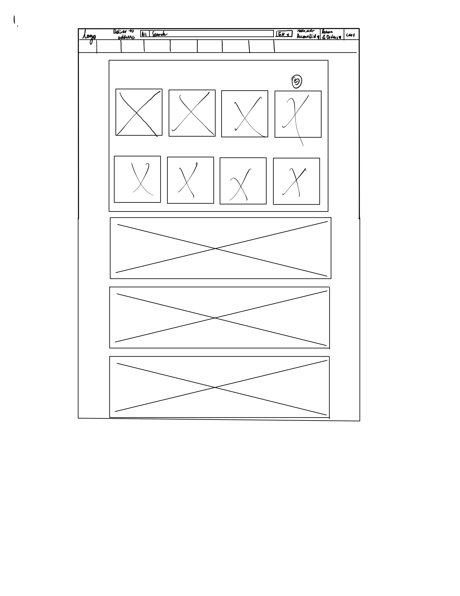

-
Using the favorite website you chose in homework 1, create a wireframe for one page of it using pen/paper, PowerPoint, or any your tool of choice. (use the 'img' tag!) Make sure to let us know what the name of your website is (Use the 'p' tag!)
This is Amazon
 -
Try to improve the website you've chosen, and create a redesigned wireframe of one page for the same website using the principles of visual hierarchy that you learned from the article.
-
What is the goal of the website? Who is it intended for? How does the design accomplish this? Write 2-3 sentences answering these questions. (Use the 'p' tag again!)
The goal of this website is to have the customers that want to buy online buy products from their website. The website is intended for the people that want to buy products online that can be deliver to them. The design allow the customers that are shopping on the website to find the item they want to buy and buy it.
-
Write 2-3 sentences about what problems your redesign addressed, and how it solved them.
My redesign is more spread out and have more white space comparing from the original one. The problem with the original website is that the things are too packed together so it is hard for the customer to focus on each sections. The white and the clear space allow the customers to be able to see different sections as if they are the only sections there and for them to be in the mind to think if they need that product or not.
NOTE: Make sure to include the wireframe images in the website and don't just put it in your assets folder!
Your wireframes should look something like this: